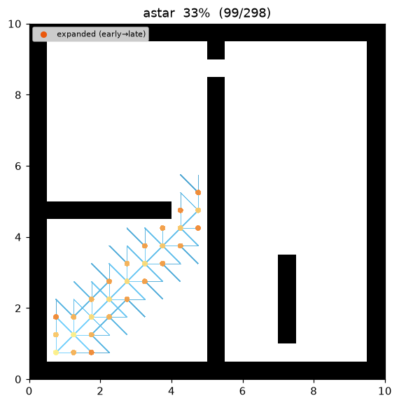
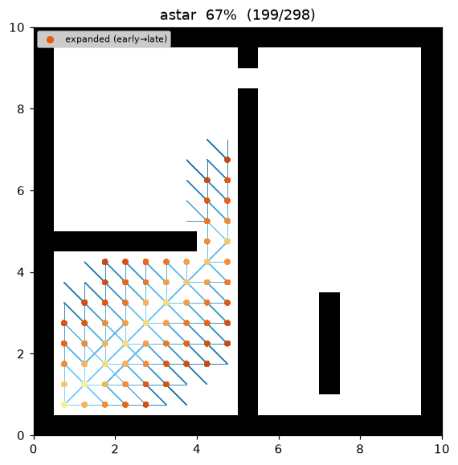
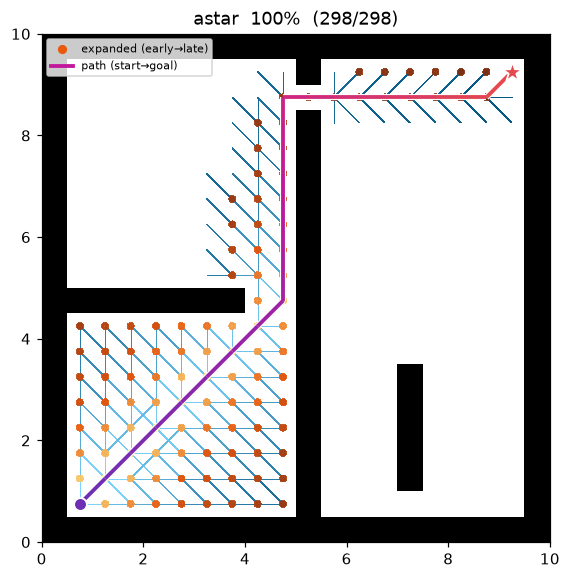
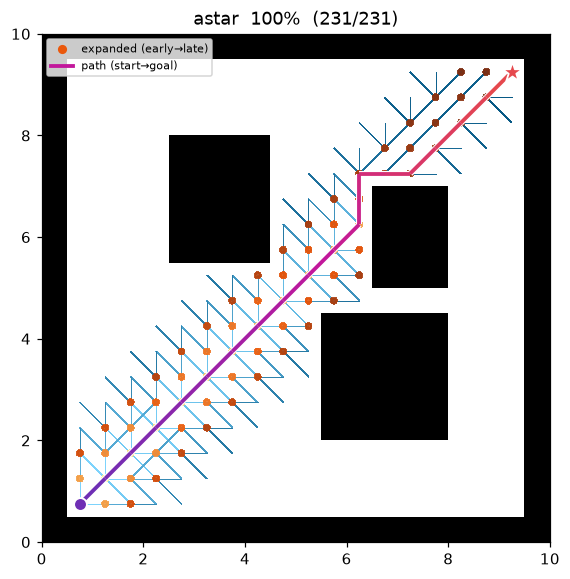

A* (A-star)¶
| Item | Description |
|---|---|
| Category | informed graph search |
| Required capability | DiscreteSpace (neighbors + heuristic) |
| Completeness | complete (finite graphs, non-negative costs) |
| Optimality | cost-optimal — when the heuristic is admissible (w = 1.0) |
| Complexity | worst case O(b^d) time/space, governed by heuristic quality |
| Original paper | Hart, Nilsson & Raphael (1968) 1 · weighted variant: Pohl (1970) 3 |
Background¶
A1 was born out of SRI's Shakey robot project, making it the path-search algorithm most deeply tied to robotics. It expands nodes in order of f(n) = g(n) + h(n), adding an estimate of the remaining cost to the goal, h(n), to Dijkstra's accumulated cost g(n). When h never overestimates the true remaining cost (i.e., is admissible), A guarantees an optimal path while expanding far fewer nodes than Dijkstra — it is "optimally efficient" in the sense that no admissible algorithm using the same information can expand fewer nodes1 2.
Pohl's weighted A3 inflates the heuristic as f = g + w·h (w > 1)*, biasing the search more aggressively toward the goal. Optimality relaxes to bounded suboptimality (within a factor of w), but the number of expanded nodes drops sharply, which is why it is widely used for real-time replanning.
How It Works¶
ASTAR(start, goal):
g[start] ← 0; open ← priority queue keyed by f = g + w·h
while open is not empty:
v ← open.pop_min() # minimum f
if v == goal: return reconstruct(v)
if v already settled: continue # lazy deletion
for (u, c) in neighbors(v):
if g[v] + c < g[u]: # relaxation (same as Dijkstra)
g[u] ← g[v] + c; parent[u] ← v
open.push(u, g[u] + w·h(u, goal))
return failure
The difference from Dijkstra is a single line — the priority key. With h ≡ 0 it degenerates exactly into Dijkstra.
Heuristic — octile distance¶
The grids in this repository are 8-connected (orthogonal 1.0, diagonal √2 × resolution), so the heuristic is the octile distance:
h(a, b) = (max(Δrow, Δcol) − min(Δrow, Δcol)) + √2 · min(Δrow, Δcol)
It exactly equals the true movement cost in the complete absence of obstacles, so it is admissible and consistent. (Heuristic computation is part of the DiscreteSpace capability and is provided by the map adapter — the algorithm knows nothing about the motion model.)
Properties¶
- Completeness: complete on finite graphs with non-negative costs.
- Optimality: admissible h + w = 1.0 → optimality guaranteed. With a consistent h, each node is expanded at most once. w > 1 → returned path cost ≤ w × optimal (bounded suboptimal)3.
- Complexity: depends on heuristic quality, ranging from Dijkstra-like (uninformative h) down to straight-line behavior (perfect h).
Parameters¶
| Name | Type | Default | Range | Description |
|---|---|---|---|---|
heuristic_weight |
float | 1.0 | [1.0, 5.0] | The w in f = g + w·h. 1.0 = admissible optimal, above = weighted A* |
Optimality & Proofs¶
Notation: \(f(n)=g(n)+h(n)\), where \(g\) is the actual cost from the start, \(h\) the estimate to the goal, \(h^*(n)\) the true remaining optimal cost, and \(C^*\) the optimal solution cost.
- Admissible: \(0\le h(n)\le h^*(n)\;\;\forall n\) — never overestimates.
- Consistent: \(h(n)\le c(n,n')+h(n')\) for every edge \((n,n')\), and \(h(\text{goal})=0\).
Theorem 1 (admissible \(\Rightarrow\) optimal). If \(h\) is admissible, the path A* returns is cost-optimal.
Proof. Suppose A* selects for expansion a goal \(G_2\) with \(g(G_2)>C^*\). As a goal, \(h(G_2)=0\), so \(f(G_2)=g(G_2)>C^*\). At that moment some node \(n\) on an optimal path is in the open set (the path from the expanded prefix to the goal crosses the frontier). By admissibility,
Thus \(f(n)\le C^*<f(G_2)\), so A* would expand \(n\) before \(G_2\) — contradiction. Hence any goal it selects has \(g=C^*\). ∎
Theorem 2 (consistent \(\Rightarrow\) admissible & no re-expansion). If \(h\) is consistent then (i) it is admissible, and (ii) \(f\) is non-decreasing along any path, so each node is expanded at most once.
Proof. (i) Telescoping \(h(n)\le c(n,n')+h(n')\) along an optimal path to the goal gives \(h(n)\le h^*(n)\). (ii) For an edge \((n,n')\), \(f(n')=g(n)+c(n,n')+h(n')\ge g(n)+h(n)=f(n)\). ∎
Bounded suboptimality of weighted A*. With \(f=g+w\,h,\;w\ge1\), the returned cost is \(\le w\cdot C^*\).
Proof sketch. When \(G_2\) is selected, for an open node \(n\) on an optimal path, \(f(G_2)=g(G_2)\le g(n)+w\,h(n)\le w\bigl(g(n)+h^*(n)\bigr)=w\,C^*\) (the second inequality uses \(w\ge1\) and admissibility). ∎
Implementation Notes¶
- C++:
cpp/src/global_planning/astar.cpp, Python:python/nav_study/global_planning/astar.py - Shares the best-first skeleton with Dijkstra (only the priority key is overridden). Both languages use the same operation order down to tie-breaking, so their results match exactly.
Emitted Trace Events¶
planning_started → (node_expanded, edge_added)* → path_found → planning_finished
Demo¶
Search on maze01. Unlike Dijkstra, the frontier visibly leans toward the goal as it grows.

Intermediate search progress (left → right: early / middle / final path):
 |
 |
 |
Final result on open01 — with few obstacles, expansion follows an almost straight diagonal:

Measurements (Python, w = 1.0, trace on):
| map | path cost | expanded nodes | ref: Dijkstra expanded |
|---|---|---|---|
| maze01 | 28.728 (optimal, same as Dijkstra) | 108 | 211 |
| open01 | 25.213 (optimal) | 71 | 267 |
Reproduce:
python python/demos/demo_astar.py \
--map maps/grid/maze01.yaml --scenario maps/scenarios/maze01_s1.yaml \
--params configs/global_planning/astar.yaml --trace out/astar.jsonl
python tools/viz/replay.py out/astar.jsonl --gif out/astar.gif --snapshots out/astar_snaps/
References¶
-
Hart, P. E., Nilsson, N. J., & Raphael, B. (1968). "A Formal Basis for the Heuristic Determination of Minimum Cost Paths." IEEE Transactions on Systems Science and Cybernetics, 4(2), 100–107. doi:10.1109/TSSC.1968.300136 ↩↩↩
-
Hart, P. E., Nilsson, N. J., & Raphael, B. (1972). "Correction to 'A Formal Basis for the Heuristic Determination of Minimum Cost Paths'." SIGART Newsletter, 37, 28–29. doi:10.1145/1056777.1056779 ↩
-
Pohl, I. (1970). "Heuristic search viewed as path finding in a graph." Artificial Intelligence, 1(3–4), 193–204. doi:10.1016/0004-3702(70)90007-X ↩↩↩